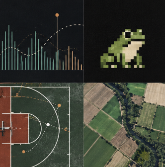

Playlist
Projects
Selected work in analysis, research, and software.
1Beats and BeliefsGlobal music charts and political freedom4 tracks
Album overview
Music charts, political freedom, and the limits of “global” data.
2FroggitInteractive Python game4 tracks
Album overview
An interactive Python game built around modular, event-driven logic.
3NBA Player Performance AnalyticsRegression and principal component analysis4 tracks
Album overview
Regression and PCA applied to patterns across player statistics.
4Allington LabSatellite imagery and agricultural research4 tracks
Album overview
Satellite imagery and model-ready data for agricultural research.